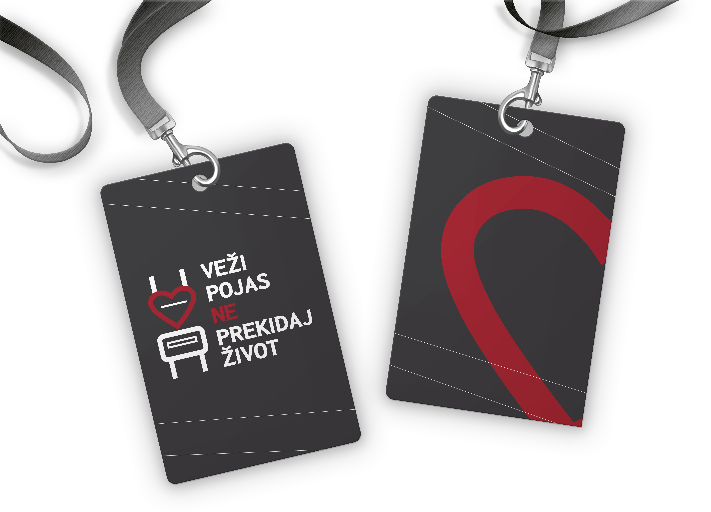
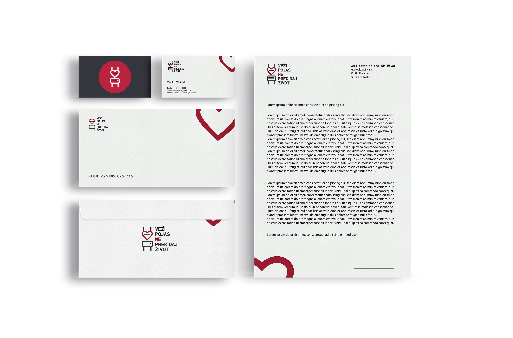
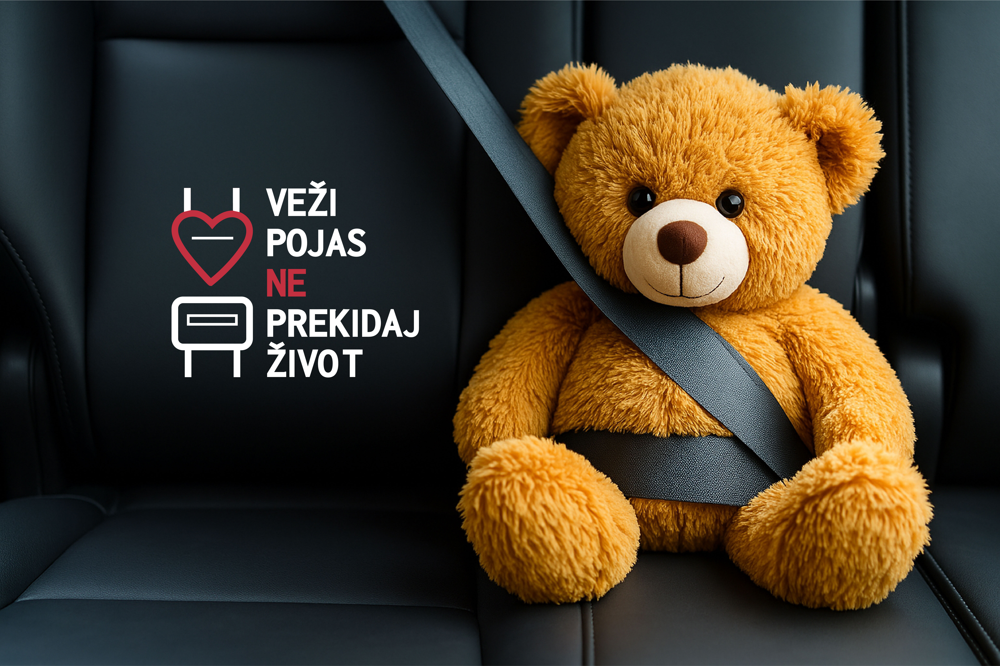
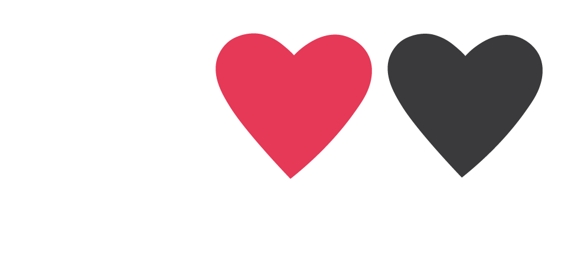
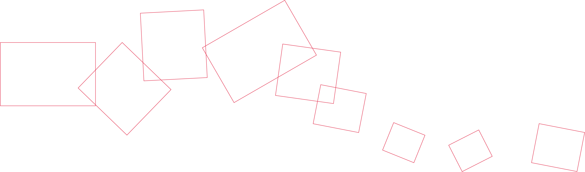

MOCKUPS



The Road Traffic Safety Agency, in cooperation with the Ministry of Internal Affairs, carried out the campaign “BUCKLE UP, DON’T CUT LIFE SHORT” during a two-week period at the beginning of March this year, with the aim of raising awareness about the importance of using seat belts.
Accidents and things that may disturb us—but are part of reality—should not be hidden from children; instead, they should be explained or presented in a way adapted to their level of understanding. How an advertisement affects children depends on their age, sensitivity, and the behavior of their parents. The parent provides the interpretation of the image the child sees and can use the opportunity to explain that such things can be prevented if we regularly wear seat belts. For children, it would certainly be more suitable to use cartoon characters so the child does not directly identify with the child in the photograph. However, the goal of the campaign is to explain to both children and adults that wearing a seat belt can save lives.
Fasten your seatbelt, don’t cut life short(Serbian: Veži pojas, ne prekidaj život).



The visual solution was designed to be simple, recognizable, and emotionally engaging, especially for children. Since the goal of the campaign is to explain the importance of wearing a seatbelt to both children and adults, the concept needed to be understandable at first glance and adapted to a child-friendly level.
To achieve this, the design combines two key, universally recognizable symbols:
a heart (representing life and care) and a seatbelt buckle (representing safety). When merged, they form a new symbol that visually communicates the campaign message — wearing a seatbelt protects life. This simplified, iconic representation makes the message easy to understand even for young children.
The use of a teddy bear reinforces this idea. A soft, familiar character helps children relate to the situation without fear, allowing parents to explain the importance of seatbelts in a gentle and approachable way. The teddy bear acts as a safe emotional bridge between the real danger and the child’s understanding.
The chosen color palette — white, red (#e53a57), and dark grey (#414042) — further strengthens clarity and visibility. Red draws attention and symbolizes danger and protection, while white and grey ensure balance and readability.
Altogether, the combination of simple shapes, a child-friendly symbol, and clear colors creates a design that immediately communicates the message of the campaign: fastening the seatbelt preserves life.


The newsletter follows the task requirements by placing one main theme — Basics of Interface Design — as the central and most visually dominant topic. Around it, several shorter articles on related innovations, such as AI development, the Games.Con festival, and design-focused courses, are organized in smaller sections to support the main content. Clear hierarchy, structured layout, and accompanying visuals ensure coherence with the brief.
The entire project was created in Adobe InDesign, using its grid and layout tools to achieve a clean and professional publication. The file is fully prepared for printing, with all necessary settings, color profiles, and formats correctly set.
As part of a design project, we were tasked with creating packaging for a chocolate product and an additional collective box designed as a gift set for shampoos, aimed at a specific target group. The main challenge of the project was to successfully integrate predefined texts and mandatory information into the packaging design, while maintaining visual clarity, aesthetic balance, and brand consistency.
The focus was on combining functionality, clear communication, and an appealing visual identity


The first box was designed for a white chocolate with almonds. The packaging features a warm, soft brown color palette that evokes a sense of natural ingredients, comfort, and premium quality.
Minimalistic line illustrations, including a stylized squirrel and almond motifs, were used to create a playful yet elegant visual identity connected to the product’s ingredients.
The typography is clean and modern, ensuring readability of all required product information.
The packaging was designed for the HerbaLux Duo Care Set (shampoo and conditioner). The box features a muted, earthy green color palette that reflects natural ingredients, plant-based care, and sustainability, while also conveying a calm and trustworthy product character.
The design follows a minimalistic approach, using subtle organic shapes inspired by leaves and botanical forms to enhance the natural feel without overwhelming the layout.
The typography is clean and modern, ensuring good readability of all essential product information while maintaining an elegant appearance.

